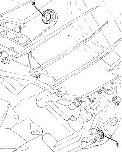

0010T41 MANUAL GEARBOX OIL CHECK LEVEL AND TOP UP IF NECESSARY
- Path
- Procedures > 00 MAINTENANCE > 0010 NEW VEHICLES AND MAINTENANCE > 0010T VEHICLE FLUIDS > 0010T41 MANUAL GEARBOX OIL CHECK LEVEL AND TOP UP IF NECESSARY
- Kind
- repair procedure (removal / refitting; the operation number is the code)
- Applies to
- all engines; all production periods
- Interactive page
- https://sloeber94.github.io/elrnDB-aBrrSpdr/en/#/946001763
Applies to: engines: 2.2 JTS; all production periods
- Position the vehicle on a lift.
Op. 7055B54 UNDER ENGINE PROTECTION/GUARD - R.R.
- Undo the transmission fluid drain plug and drain the fluid.
- Unscrew the transmission fluid filler plug and wait for the fluid to flow out completely.
- Tighten the new transmission fluid drain plug.
- Add fluid of the specified type and quantity through the filler opening.
Component | Type | Description | Classification | Qty. | Validity |
|---|---|---|---|---|---|
Manual gearbox/differential | Oil [l] | TUTELA CAR MATRIX | SAE 75W-85 - API GL 4 | 2.3 | 2.2 JTS |
- Tighten the transmission fluid filler plug to the recommended torque.
Component | Fastening | dia | Value (daNm) | Validity |
|---|---|---|---|---|
Gearbox fluid filler plug | - | M18 | 2.4 ÷ 3.6 |
Op. 7055B54 UNDER ENGINE PROTECTION/GUARD - R.R.
- Remove the vehicle from the lift.
Applies to: all engines; all production periods
- Position the vehicle on a lift.
Op. 7055B54 UNDER ENGINE PROTECTION/GUARD - R.R.
1. Undo the oil filler plug.

Applies to: all engines; all production periods
1. Unscrew the gearbox oil drain plug and allow the oil to drain out into a suitable container.

Applies to: all engines; all production periods
- Clean the drain plug and the plug seat removing any residues of sealant.
- Apply sealant (LOCTITE 510 or the equivalent) to the drain plug thread and tighten in its seat to the recommended torque.
Component | Fastening | dia | Value (daNm) | Validity |
|---|---|---|---|---|
Gearbox fluid drain plug | - | - | 1.7 |
- Add oil of the specified type and quantity through the inlet opening.
Component | Type | Description | Classification | Qty. | Validity |
|---|---|---|---|---|---|
Manual gearbox/differential | Oil [l] | TUTELA CAR MATRIX | SAE 75W-85 - API GL 4 | 2.3 | 2.2 JTS |
Component | Type | Description | Classification | Qty. | Validity |
|---|---|---|---|---|---|
Manual gearbox/differential | Oil [l] | TUTELA CAR MATRIX | SAE 75W-85 - API GL 4 | 2.8 | 3.2 JTS 2.4 JTD 20V |
- Clean the drain plug and tighten it to the recommended torque.
Component | Fastening | dia | Value (daNm) | Validity |
|---|---|---|---|---|
Gearbox fluid filler plug | - | M18 | 2.4 ÷ 3.6 |
Op. 7055B54 UNDER ENGINE PROTECTION/GUARD - R.R.
- Remove the vehicle from the lift.
Topics linked from this page (1)
Topics that link to this page (14)
- S022 GEARBOX NOISE - IN NEUTRAL
- X015 GEARBOX/DIFFERENTIAL OIL LEAKS
- 0010T40 CHANGE MANUAL GEARBOX OIL
- 1004B10 POWER UNIT WITH MANUAL GEARBOX - R.R
- 1004B24 POWER UNIT WITH MANUAL GEARBOX WITH HYDRAULIC SELECTION - R.R.
- 1020D36 FLYWHEEL SIDE OIL SEAL - REPLACE FOR MANUAL GEARBOX WITH HYDRAULIC SELECTION VERSIONS
- 1020D38 FLYWHEEL SIDE OIL SEAL - REPLACE
- 1024B10 ENGINE FLYWHEEL - R + R FOR VERSIONS WITH MANUAL GEARBOX
- 1810A20 CLUTCH - R + R
- 1810A28 CLUTCH - R.R. FOR MANUAL GEARBOX WITH HYDRAULIC SELECTION VERSIONS
- 1820B30 CLUTCH HYDRAULIC ACTUATOR - R.R.
- 2110A10 MANUAL GEARBOX AND DIFFERENTIAL - R + R
- 2110A11 MANUAL GEARBOX WITH DIFFERENTIAL - R.R. FOR VERSIONS WITH HYDRAULIC SELECTION
- 4410B40 LOWER TRACK CONTROL ARM (WITH BALLJOINT) FOR LEFT OR RIGHT FRONT SUSPENSION (ONE) - R+R - CHECK WHEEL GEOMETRY SEPARATELY